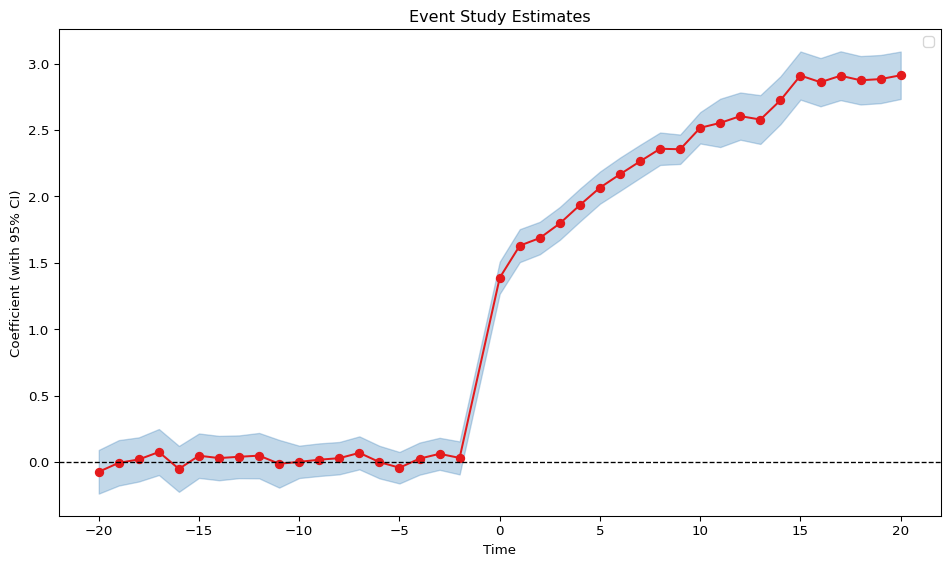

import pandas as pd
import pyfixest as pf
url = "https://raw.githubusercontent.com/py-econometrics/pyfixest/master/pyfixest/did/data/df_het.csv"
df_het = pd.read_csv(url)
fit_twfe = pf.event_study(
df_het,
yname="dep_var",
idname="unit",
tname="year",
gname="g",
estimator="twfe",
att=True,
)
fit_twfe.tidy()
# run saturated event study
fit_twfe_saturated = pf.event_study(
df_het,
yname="dep_var",
idname="unit",
tname="year",
gname="g",
estimator="saturated",
)
fit_twfe_saturated.aggregate()
fit_twfe_saturated.iplot_aggregate()/home/runner/work/pyfixest/pyfixest/pyfixest/did/saturated_twfe.py:68: UserWarning: The SaturatedEventStudyClass is currently in beta. Please report any issues you may encounter.
warnings.warn(
/home/runner/work/pyfixest/pyfixest/pyfixest/estimation/feols_.py:2654: UserWarning:
22 variables dropped due to multicollinearity.
The following variables are dropped:
C(rel_time, contr.treatment(base=-1.0))[-20.0]:cohort_dummy_2000
C(rel_time, contr.treatment(base=-1.0))[-19.0]:cohort_dummy_2000
C(rel_time, contr.treatment(base=-1.0))[-18.0]:cohort_dummy_2000
C(rel_time, contr.treatment(base=-1.0))[-17.0]:cohort_dummy_2000
C(rel_time, contr.treatment(base=-1.0))[-16.0]:cohort_dummy_2000
....
warnings.warn(
/home/runner/work/pyfixest/pyfixest/pyfixest/did/saturated_twfe.py:271: UserWarning: No artists with labels found to put in legend. Note that artists whose label start with an underscore are ignored when legend() is called with no argument.
ax.legend()